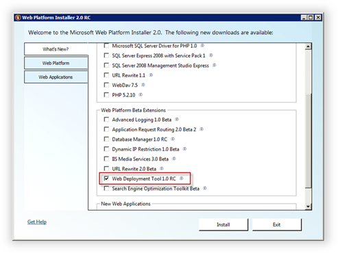
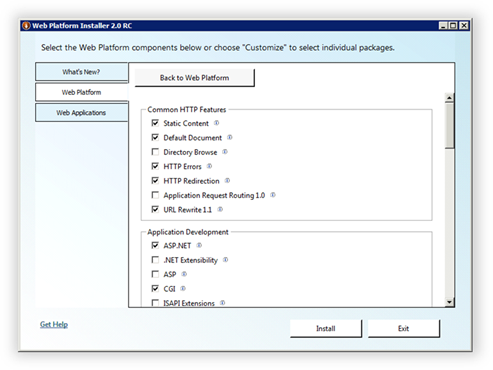
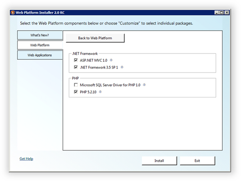
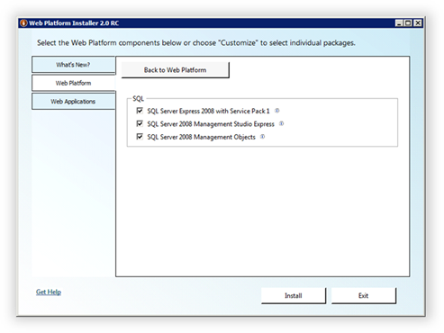

Preparing Windows Server 2008 for WebsitePanel Installation
This topic describes how to configure Windows Server 2008 before you install WebSitePanel. To prepare a server before you install WebSitePanel, run the Web Platform Installer, which you can download from the following location:
http://www.microsoft.com/web/downloads/platform.aspx
Web PI lists the latest products and libraries that are available for the current platform (Windows Server 2008). Select the Web Deployment Tool 1.0 RC option item to install the MS Deploy library. This library is required in order for WebsitePanel to integrate with the Microsoft Web App Gallery module.

On the Web Platform tab, click the Customize link under Web Server. Then select the components shown in the following illustration:
- Common HTTP Features
- Static Content
- Default Document
- HTTP Errors
- HTTP Redirection
- URL Rewrite 1.1
- Application Development
- ASP.NET
- CGI
- Deployment and Publishing
- FTP Publishing Service 7.5
- FTP Publishing Service 7.5
- Management
- IIS Management Console
- IIS Management Console
- Security
- Basic Authentication
- Windows Authentication

Click Back to Web Platform.
In the Frameworks and Runtimes section, click Customize. Then select the components shown in the following illustration:

Click Back to Web Platform.
In the Database section, click Customize. Then select the database components shown in the following illustration:

Click Back to Web Platform.
Optionally, you can go to the Tools section and install Visual Web Developer with Silverlight. However, those components are not required for WebsitePanel installation.
Click Install to start the installation process for the selected components. Before SQL Server 2008 is installed, you will be asked about its security mode. Select Mixed Mode Authentication and then specify a password for the sa account.